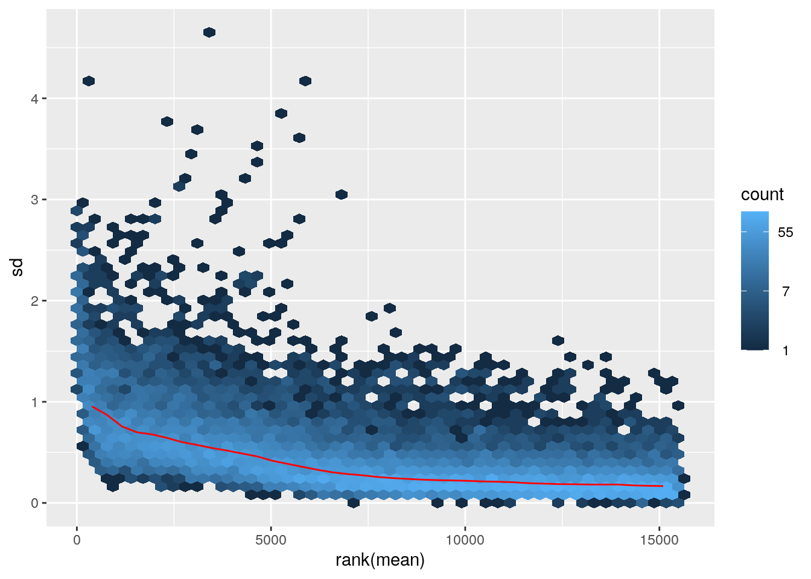
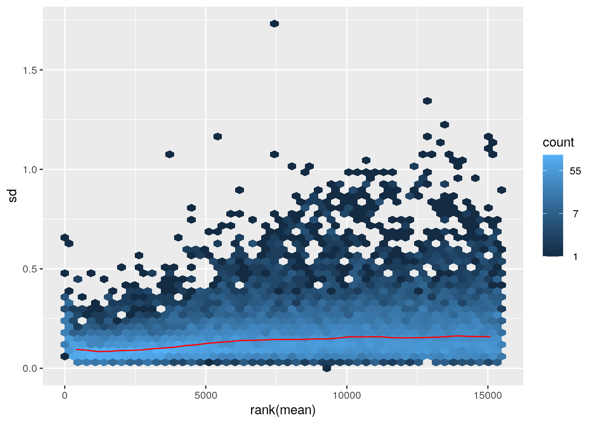

RNASeq Tertiary Analysis: Part 1
Bharat Mishra, Ph.D., Austyn Trull, Lara Ianov, Ph.D.
In addition to U-BDS’s best practices and code written by U-BDS, sections of the teaching material for this workshop (especially tertiary analysis), contains materials which have been adapted or modified from the following sources (we thank the curators and maintainers of all of these resources for their wonderful contributions, compiling the best practices, and easy to follow training guides for beginners):
- Beta phase of carpentries meterial: https://carpentries-incubator.github.io/bioc-rnaseq/index.html
- Love MI, Huber W, Anders S (2014). “Moderated estimation of fold change and dispersion for RNA-seq data with DESeq2.” Genome Biology, 15, 550. doi:10.1186/s13059-014-0550-8 ; vignette: https://bioconductor.org/packages/devel/bioc/vignettes/DESeq2/inst/doc/DESeq2.html
- Additional references and materials:
Overview
Tertiary analysis can be long and complex and is heavily dependent on
study design. This workshop focuses on standard tertiary analysis tasks
which are split across 4 parts covering: quality and control, data
normalization and differential gene expression analysis with
DESeq2, gene annotation, gene enrichment analysis
(gene-ontology and gene set enrichment analysis), and the fundamentals
of data visualization for transcriptomics.
Packages loaded globabally
# Set the seed so our results are reproducible:
set.seed(2020)
# Required packages
library(tximport)
library(DESeq2)
library(Glimma)
library(vsn)
# Mouse annotation package we'll use for gene identifier conversion
library(biomaRt)
# We will need them for data handling
library(magrittr)
library(ggrepel)
library(dplyr)
library(tidyverse)
library(readr)
# plotting
library(ggplot2)
library(ComplexHeatmap)
library(RColorBrewer)Create data and results directory
dir.create("./data", recursive = TRUE)
dir.create("./results", recursive = TRUE) Input data
The DESeqDataSet
In the DESeq2 package, the core object for storing read
counts and intermediate calculations during RNA-seq analysis is the
DESeqDataSet. This object, often referred to as dds in code
examples, is derived from the RangedSummarizedExperiment
class within the SummarizedExperiment package.
The “Ranged” aspect of DESeqDataSet signifies that each
row of read count data can be linked to specific genomic regions, such
as gene exons. This connection allows for seamless integration with
other Bioconductor tools, enabling tasks like identifying
ChIP-seq peaks near differentially expressed genes.
Crucially, a DESeqDataSet object requires a
design formula, which defines the variables considered in
the statistical model. This formula typically consists of a tilde
(~) followed by variables separated by plus signs. While
the design can be modified after object creation, any changes
necessitate repeating the upstream analytical steps of the DESeq2
pipeline, as changes in the design influences the
dispersion estimates and log2 fold change calculations.
We can import input data by 4 ways to construct a
DESeqDataSet, depending on what pipeline was used upstream
of DESeq2 to generated counts or estimated counts:
. From transcript abundance files and
tximport
. From a count matrix
. From htseq-count files
. From a SummarizedExperiment object
Transcript abundance files and tximport / tximeta
Given that we have implemented salmon quantification in
secondary analysis, the recommended approach for tertiary analysis is to
import the salmon transcript quantification to
DESeq2, and then quantify gene-level data in
DESeq2 using tximport. This same approach can
also be applied to other transcript abundance quantifiers such as
kallisto
Employing salmon or kallisto for transcript
abundance estimation offers several key benefits:
Correction for gene length variations: These methods account for potential changes in gene length across samples, which can arise from differential isoform usage.
Efficiency: As discussed in the secondary analysis portion,
salmon and kallisto are notably faster and
require less computational resources compared to alignment-based
approaches that involve generating and storing BAM files. This is a
significant advantage for large-scale studies or when analyzing datasets
with limited resources.
Increased sensitivity: Unlike traditional methods that discard ambiguously aligning fragments, these tools can leverage information from reads aligning to multiple homologous genes. This increases the sensitivity of transcript quantification, particularly for genes with high sequence similarity.
With that being said and as previously discussed in secondary analysis, there can be study design needs where standard splice aware aligners may be more beneficial or complimentary.
Note : For this workshop, we will import the transcript
abundance (quant.sf) file created by salmon in
the secondary analysis pipeline (nf-core) using
tximport method. The files are provided to you in the
/data folder
Note: For simplicity and organization, we have renamed the
.sf files by ${sample_names}_quant.sf. Please
practice caution while updating the file names in your own research
projects to avoid sample mix-up (tip: changing file names does not alter
the md5sum of the file. Thus, this checker can be applied to ensure
there has been no sample mix-ups.
salmon, or STAR-salmon files
Locate all the transcript abundance file and prepare them to be
imported to DESeq2.
tx2gene <- read.table("./data/tx2gene.tsv", sep = '\t', header = FALSE)
head(tx2gene)## V1 V2 V3
## 1 ENSMUST00000193812.2 ENSMUSG00000102693.2 4933401J01Rik
## 2 ENSMUST00000082908.3 ENSMUSG00000064842.3 Gm26206
## 3 ENSMUST00000162897.2 ENSMUSG00000051951.6 Xkr4
## 4 ENSMUST00000159265.2 ENSMUSG00000051951.6 Xkr4
## 5 ENSMUST00000070533.5 ENSMUSG00000051951.6 Xkr4
## 6 ENSMUST00000192857.2 ENSMUSG00000102851.2 Gm18956# Importing quant.sf file from secondary outputs within data:
myFiles <- dir("./data", ".sf$", full.names = TRUE)
myFiles## [1] "./data/N01_AM_Naive_quant.sf" "./data/N02_AM_Naive_quant.sf"
## [3] "./data/N03_AM_Naive_quant.sf" "./data/N04_AM_Naive_quant.sf"
## [5] "./data/R05_AM_Allo24h_quant.sf" "./data/R06_AM_Allo24h_quant.sf"
## [7] "./data/R07_AM_Allo24h_quant.sf" "./data/R08_AM_Allo24h_quant.sf"# Adding names for columns:
myFiles_names <- c()
for (i in myFiles) {
result <- gsub("_quant.sf","",i)
result <- basename(result)
myFiles_names[result] <- i
}
all(file.exists(myFiles_names))## [1] TRUE# Making a log of the col names from full names:
Log <- as.matrix(myFiles_names)
write.table(Log, file = "./results/Sample_names_tximport.txt",
quote = FALSE, col.names = FALSE, sep = "\t")tximport
We will now import the transcript-level abundances and quantify them into gene-level counts.
Note that we explicitly set the ignoreTxVersion
parameter to FALSE despite it being the default value. This
serves as a reminder to ensure that the parameter has been set correctly
according to the reference source. In this canse, we set it to
FALSE given that we used a GENCODE reference, which
contains versions associated to each feature which can be seen in the
tx2gene object.
# First, let's take a peak at the available parameters for the tximport functions
?tximport# with sensible parameters set, run tximport:
txi <- tximport(myFiles_names,
type = "salmon",
tx2gene = tx2gene,
txOut = FALSE,
ignoreTxVersion=FALSE)## reading in files with read_tsv## 1 2 3 4 5 6 7 8
## summarizing abundance
## summarizing counts
## summarizing lengthnames(txi)## [1] "abundance" "counts" "length"
## [4] "countsFromAbundance"head(txi$counts, 5)## N01_AM_Naive N02_AM_Naive N03_AM_Naive N04_AM_Naive
## ENSMUSG00000000001.5 3831 3765 3395 2841
## ENSMUSG00000000003.16 0 0 0 0
## ENSMUSG00000000028.16 180 192 173 90
## ENSMUSG00000000031.18 0 0 0 0
## ENSMUSG00000000037.18 4 3 9 3
## R05_AM_Allo24h R06_AM_Allo24h R07_AM_Allo24h
## ENSMUSG00000000001.5 5403.000 4993 4155.000
## ENSMUSG00000000003.16 0.000 0 0.000
## ENSMUSG00000000028.16 1326.001 1378 1093.999
## ENSMUSG00000000031.18 0.000 0 0.000
## ENSMUSG00000000037.18 12.000 11 7.000
## R08_AM_Allo24h
## ENSMUSG00000000001.5 4122
## ENSMUSG00000000003.16 0
## ENSMUSG00000000028.16 861
## ENSMUSG00000000031.18 0
## ENSMUSG00000000037.18 10head(txi$abundance, 5)## N01_AM_Naive N02_AM_Naive N03_AM_Naive N04_AM_Naive
## ENSMUSG00000000001.5 98.216401 106.299723 99.267634 95.303118
## ENSMUSG00000000003.16 0.000000 0.000000 0.000000 0.000000
## ENSMUSG00000000028.16 6.839288 8.727377 8.015467 4.422736
## ENSMUSG00000000031.18 0.000000 0.000000 0.000000 0.000000
## ENSMUSG00000000037.18 0.647132 0.120524 0.343255 0.192976
## R05_AM_Allo24h R06_AM_Allo24h R07_AM_Allo24h
## ENSMUSG00000000001.5 95.846128 94.673074 92.201307
## ENSMUSG00000000003.16 0.000000 0.000000 0.000000
## ENSMUSG00000000028.16 34.996297 38.631371 36.942847
## ENSMUSG00000000031.18 0.000000 0.000000 0.000000
## ENSMUSG00000000037.18 0.125222 0.149528 0.176068
## R08_AM_Allo24h
## ENSMUSG00000000001.5 89.722317
## ENSMUSG00000000003.16 0.000000
## ENSMUSG00000000028.16 29.781577
## ENSMUSG00000000031.18 0.000000
## ENSMUSG00000000037.18 0.305835Sample meta data
A sample metadata file should contain all relevant metadata known for the samples in the study. This typically includes at a minimum the experimental grouping. However, it should also include additional factors when they are a part of the study (e.g.: sex, age, batch, time-points etc.)
For this particular study, the sample metadata was acquired from the public repository containing the raw data:
# import file containing sample metadata
colData <- read.csv("./data/ColData.csv", header=TRUE, row.names=1)
colData## Condition Group Time Genotype Sex Age
## N01_AM_Naive Naive Naive Naive Cx3cr1gfp/+B6 Male 14W
## N02_AM_Naive Naive Naive Naive Cx3cr1gfp/+B6 Male 14W
## N03_AM_Naive Naive Naive Naive Cx3cr1gfp/+B6 Male 14W
## N04_AM_Naive Naive Naive Naive Cx3cr1gfp/+B6 Male 14W
## R05_AM_Allo24h Transplant Transplant_24hr 24hr Cx3cr1gfp/+B6 Male 14W
## R06_AM_Allo24h Transplant Transplant_24hr 24hr Cx3cr1gfp/+B6 Male 14W
## R07_AM_Allo24h Transplant Transplant_24hr 24hr Cx3cr1gfp/+B6 Male 14W
## R08_AM_Allo24h Transplant Transplant_24hr 24hr Cx3cr1gfp/+B6 Male 14Wstr(colData)## 'data.frame': 8 obs. of 6 variables:
## $ Condition: chr "Naive" "Naive" "Naive" "Naive" ...
## $ Group : chr "Naive" "Naive" "Naive" "Naive" ...
## $ Time : chr "Naive" "Naive" "Naive" "Naive" ...
## $ Genotype : chr "Cx3cr1gfp/+B6" "Cx3cr1gfp/+B6" "Cx3cr1gfp/+B6" "Cx3cr1gfp/+B6" ...
## $ Sex : chr "Male" "Male" "Male" "Male" ...
## $ Age : chr "14W" "14W" "14W" "14W" ...# change the condition, group, and time to factor
colData$Condition <- as.factor(colData$Condition)
colData$Group <- as.factor(colData$Group)
colData$Time <- as.factor(colData$Time)
colData## Condition Group Time Genotype Sex Age
## N01_AM_Naive Naive Naive Naive Cx3cr1gfp/+B6 Male 14W
## N02_AM_Naive Naive Naive Naive Cx3cr1gfp/+B6 Male 14W
## N03_AM_Naive Naive Naive Naive Cx3cr1gfp/+B6 Male 14W
## N04_AM_Naive Naive Naive Naive Cx3cr1gfp/+B6 Male 14W
## R05_AM_Allo24h Transplant Transplant_24hr 24hr Cx3cr1gfp/+B6 Male 14W
## R06_AM_Allo24h Transplant Transplant_24hr 24hr Cx3cr1gfp/+B6 Male 14W
## R07_AM_Allo24h Transplant Transplant_24hr 24hr Cx3cr1gfp/+B6 Male 14W
## R08_AM_Allo24h Transplant Transplant_24hr 24hr Cx3cr1gfp/+B6 Male 14WBuild a DESeq2DataSet
The DESeqDataSet class, derived from
RangedSummarizedExperiment, serves as the central data
container in DESeq2 for storing input data, intermediate
calculations, and differential expression analysis results. It enforces
the use of non-negative integer values in the counts matrix, the first
element in its assay list. Moreover, a design formula
defining the experimental setup is mandatory.
Constructor functions facilitate the creation of
DESeqDataSet objects from diverse sources:
. DESeqDataSet: Accepts a
RangedSummarizedExperiment object.
. DESeqDataSetFromMatrix: Constructs from a matrix of
counts.
. DESeqDataSetFromHTSeqCount: Creates from
HTSeq count files generated by the Python package.
. DESeqDataSetFromTximport: Builds from a list object
returned by the tximport function.
The design parameter plays a pivotal role in modeling
samples based on the experimental design. In our workshop dataset, where
only the condition varies, a simple ~ Condition model
suffices.
However, DESeq2 accommodates complex designs involving
batch correction, interactions, and time-series analysis. Refer to the
“additional_resources” section of this workshop and the
DESeq2 vignette for more elaborate design examples.
# tximport dds generation
dds <- DESeqDataSetFromTximport(txi,
colData = colData,
design = ~ Condition) # update the design as needed## using counts and average transcript lengths from tximportdds## class: DESeqDataSet
## dim: 55891 8
## metadata(1): version
## assays(2): counts avgTxLength
## rownames(55891): ENSMUSG00000000001.5 ENSMUSG00000000003.16 ...
## ENSMUSG00002076991.1 ENSMUSG00002076992.1
## rowData names(0):
## colnames(8): N01_AM_Naive N02_AM_Naive ... R07_AM_Allo24h
## R08_AM_Allo24h
## colData names(6): Condition Group ... Sex Agehead(counts(dds), 5)## N01_AM_Naive N02_AM_Naive N03_AM_Naive N04_AM_Naive
## ENSMUSG00000000001.5 3831 3765 3395 2841
## ENSMUSG00000000003.16 0 0 0 0
## ENSMUSG00000000028.16 180 192 173 90
## ENSMUSG00000000031.18 0 0 0 0
## ENSMUSG00000000037.18 4 3 9 3
## R05_AM_Allo24h R06_AM_Allo24h R07_AM_Allo24h
## ENSMUSG00000000001.5 5403 4993 4155
## ENSMUSG00000000003.16 0 0 0
## ENSMUSG00000000028.16 1326 1378 1094
## ENSMUSG00000000031.18 0 0 0
## ENSMUSG00000000037.18 12 11 7
## R08_AM_Allo24h
## ENSMUSG00000000001.5 4122
## ENSMUSG00000000003.16 0
## ENSMUSG00000000028.16 861
## ENSMUSG00000000031.18 0
## ENSMUSG00000000037.18 10Note on factor levels
By default, R automatically assigns a reference level to
factors based on alphabetical order. If you don’t specify a different
reference level (e.g., indicating the control group) when
using DESeq2 functions, comparisons will be made based on
this alphabetical order.
To address this, you have two options:
Explicitly define the comparison: Use the contrast argument in the results function to specify the exact comparison you want to make. This overrides the default reference level.
Change the factor levels: Explicitly set the factor levels to determine the reference level. This change will be reflected in the results names after running
DESeqornbinomWaldTest/nbinomLRT.
Below we demonstrate option #2:
# see current levels:
dds$Condition## [1] Naive Naive Naive Naive Transplant Transplant
## [7] Transplant Transplant
## Levels: Naive TransplantIn the output above, we can see that Naive is already
set as the reference level by alphabetical order. However, it is still
best practice to include the code chunk in your analysis and not rely on
alphabetical order as it can easily change across experiments.
# set reference to Naive
dds$Condition <- relevel(dds$Condition, ref = "Naive")
dds$Condition## [1] Naive Naive Naive Naive Transplant Transplant
## [7] Transplant Transplant
## Levels: Naive TransplantQuality Control
Exploratory analysis is an essential step in RNA-seq
data analysis for quality control and understanding the underlying
patterns. It can reveal issues like quality problems, sample swaps, or
contamination, while also highlighting the most prominent trends in the
dataset.
In this section, we’ll delve into two common approaches for
exploratory analysis of RNA-seq data: clustering and
principal component analysis (PCA). These methods aren’t
exclusive to RNA-seq but are widely applicable. However, certain aspects
of count data require specific considerations when applying these
techniques.
Filter low abundance genes
Before proceeding, it’s important to establish a threshold for
gene expression detectability. A simple criterion we’ll use
here is to consider a gene as non-detectable (or extremely low
abundance) if its total count across all samples doesn’t exceed 5. This
ensures we focus on genes with sufficient data for meaningful
analysis.
#----- Counts Pre-filtering based on rowMeans -------
message(paste0("Number of genes before pre-filtering: ", nrow(counts(dds))))## Number of genes before pre-filtering: 55891# here we do rowMeans, other approaches are rowSums or min. per sample
keep <- rowMeans(counts(dds)) >= 5
dds <- dds[keep,]
message(paste0("Number of genes after filtering: ", nrow(counts(dds))))## Number of genes after filtering: 15486Note that there has been a notable drop in the number of genes present in this dataset.
Discussion Question
Given the drop from ~55k genes to 15k genes. Is this expected for this species (mouse) and tissue type (lung-derived cells)? How many genes are typically expressed in mammalian genomes?
QC Plots
Library size differences
Library size refers to the total number of reads
assigned to genes for a given sample. Comparing raw
read counts directly between samples with different library
sizes can lead to incorrect conclusions about differential gene
expression.
Normalization by library size adjusts the read counts to
make them comparable across samples, removing the technical bias
introduced by varying sequencing depths. Before proceeding with
downstream analysis, it is crucial to compare the library sizes across
all samples to identify potential outliers or samples with significantly
different sequencing depths.
# Add in the sum of all counts
dds$libSize <- colSums(counts(dds))
# Plot the libSize by using pipe %>%
# to extract the colData, turn it into a regular
# data frame then send to ggplot:
libsize_plot <- colData(dds) %>%
as.data.frame() %>%
ggplot(aes(x = rownames(colData), y = libSize / 1e6, fill = Condition)) +
geom_bar(stat = "identity") + theme_bw() +
labs(x = "Sample", y = "Total count in millions") +
theme(axis.text.x = element_text(angle = 45, hjust = 1, vjust = 1))
# let's take a look at the plot:
libsize_plot
# reminder on how to save figures:
png("./results/libsize_plot.png")
plot(libsize_plot)
dev.off()## png
## 2Based on the figure above, we can see that there are differences in the raw counts across the samples. This is expected, and in the later sections the data will be normalized to account for this technical artifact.
Transform the data
The DESeq2 package provides two main approaches for
transforming RNA-seq count data: the variance stabilizing transformation
(vst) and the regularized log transformation
(rlog). Both methods aim to produce transformed data on the
log2 scale that is normalized for library size or other normalization
factors.
. Variance Stabilizing Transformation (vst) The vst is
based on the concept of transforming the data such that the variance
becomes independent of the mean expression level. This approach is
useful because RNA-seq data often exhibits higher variance for lowly
expressed genes compared to highly expressed genes.
. Regularized Log Transformation (rlog) The rlog is an
alternative approach that transforms the count data to the
log2 scale while minimizing differences between samples for
rows (genes) with small counts. It incorporates a prior on the sample
differences, which acts as a regularization or shrinkage step.
Both vst and rlog produce transformed data
on the log2 scale, normalized for library size
or other factors. The choice between the two transformations may depend
on the specific characteristics of the dataset, such as the range of
library sizes or the presence of lowly expressed genes
Blind dispersion estimation
The vst and rlog functions in
DESeq2 have an argument blind that determines whether the
transformation should be blind to the sample information specified by
the design formula. When blind is set to TRUE
(the default), the functions will re-estimate the dispersion using only
an intercept, ensuring that the transformation is unbiased by any
information about the experimental groups.
If blind is set to FALSE, the functions
will use the already estimated dispersion to perform the
transformations. If dispersion are not already estimated, they will be
calculated using the current design formula. It is
important to note that even when blind is set to
FALSE, the transformation primarily uses the fitted
dispersion estimates from the mean-dispersion trend line, which reflects
the global dependence of dispersion on the mean for the entire
experiment. Therefore, setting blind to FALSE
still largely avoids using specific information about which samples
belong to which experimental groups during the transformation
meanSdPlot(assay(dds), ranks = FALSE)vsd <- vst(dds, blind=FALSE)## using 'avgTxLength' from assays(dds), correcting for library sizevsd## class: DESeqTransform
## dim: 15486 8
## metadata(1): version
## assays(1): ''
## rownames(15486): ENSMUSG00000000001.5 ENSMUSG00000000028.16 ...
## ENSMUSG00002076763.1 ENSMUSG00002076916.1
## rowData names(4): baseMean baseVar allZero dispFit
## colnames(8): N01_AM_Naive N02_AM_Naive ... R07_AM_Allo24h
## R08_AM_Allo24h
## colData names(7): Condition Group ... Age libSizemeanSdPlot(assay(vsd), ranks = FALSE)
PCA Plot
Principal component analysis (PCA) is a dimensionality reduction technique that projects samples into a lower-dimensional space. This reduced representation can be used for visualization or as input for other analytical methods. PCA is unsupervised, meaning it does not incorporate external information about the samples, such as treatment conditions.
In the plot below, we represent the samples in a two-dimensional principal component space. For each dimension, we indicate the fraction of the total variance represented by that component. By definition, the first principal component (PC1) always captures more variance than subsequent components. The fraction of explained variance measures how much of the ‘signal’ in the data is retained when projecting samples from the original high-dimensional space to the low-dimensional space for visualization.
Principal component (PC) analysis plot displaying our 8 samples along PC1 and PC2, indicates that there ~83% of variance is explained in PC1 and that ~4% is explained in PC2.
pcaData <- DESeq2::plotPCA(vsd, intgroup = "Condition",
returnData = TRUE)## using ntop=500 top features by variancepercentVar <- round(100 * attr(pcaData, "percentVar"))
ggplot(pcaData, aes(x = PC1, y = PC2)) +
geom_point(aes(color = Condition), size = 5) +
xlab(paste0("PC1: ", percentVar[1], "% variance")) +
ylab(paste0("PC2: ", percentVar[2], "% variance")) +
coord_fixed() +
theme(text = element_text(size=20)) +
theme_bw(base_size = 16) +
scale_y_continuous(limits = c(-6, 6)) 
Discussion Question
What is your interpratation from the PCA plot above. Does it overall display variance that can be biologically relevant?
Challenge: Add names of samples on PCA plot
Click here for solution
ggplot(pcaData, aes(x = PC1, y = PC2)) +
geom_point(aes(color = Condition), size = 5) +
coord_fixed() +
theme_minimal() +
xlab(paste0("PC1: ", percentVar[1], "% variance")) +
ylab(paste0("PC2: ", percentVar[2], "% variance")) +
theme(text = element_text(size=20)) +
theme_bw(base_size = 16) +
scale_y_continuous(limits = c(-6, 6)) +
geom_text_repel(data = pcaData,
mapping = aes(label = name),
size = 2,
fontface = 'bold.italic',
color = 'black',
box.padding = unit(0.2, "lines"),
point.padding = unit(0.2, "lines"))
Euclidean distance heatmap
Euclidean distance is a measure of the straight-line
distance between two points. In the context of sample clustering, it can
be used to assess the similarity of gene expression patterns between
samples. Longer Euclidean distances indicate greater
differences in expression.
One straightforward approach to cluster samples based on
their expression patterns is to calculate the Euclidean distance between
all possible sample pairs. These distances can then be visually
represented using both a branching dendrogram and a
heatmap, where color intensity corresponds to the magnitude
of the distance.
From this, we infer that all samples are clustered based on the
Groups.
# dist computes distance with Euclidean method
sampleDists <- dist(t(assay(vsd)))
colors <- colorRampPalette(brewer.pal(9, "Blues"))(255)
ComplexHeatmap::Heatmap(
as.matrix(sampleDists),
col = colors,
name = "Euclidean\ndistance",
cluster_rows = hclust(sampleDists),
cluster_columns = hclust(sampleDists),
bottom_annotation = columnAnnotation(
condition = vsd$Condition,
time = vsd$Time,
col = list(condition = c(Naive = "blue", Transplant = "brown"),
time = c("Naive" = "yellow", "24hr" = "forestgreen"))
))
Interactive QC Plots
Often it is useful to look at interactive plots to directly explore different experimental factors or get insights from someone without coding experience.(particularly useful when there are covariate etc.)
Some useful tools for interactive exploratory data analysis for RNA-seq are Glimma and iSEE
While we will not cover them at this time, we encourage trainees to explore the resources above in the future.
save data
We will save the analyzed datasets for other parts of this workshop.
saveRDS(dds, file = "./results/dds.rds")
saveRDS(vsd, file = "./results/vsd.rds")
saveRDS(colData, file = "./results/colData.rds")
saveRDS(txi, file = "./results/txi.rds")session info
R’s sessionInfo() captures the version of all packages
loaded in the current environment. You may save this to an external file
with the following command:
writeLines(capture.output(sessionInfo()), "./results/sessionInfo.txt")
In this case, we are displaying it as part of our lesson:
sessionInfo()## R version 4.3.3 (2024-02-29)
## Platform: x86_64-pc-linux-gnu (64-bit)
## Running under: Ubuntu 22.04.4 LTS
##
## Matrix products: default
## BLAS: /usr/lib/x86_64-linux-gnu/openblas-pthread/libblas.so.3
## LAPACK: /usr/lib/x86_64-linux-gnu/openblas-pthread/libopenblasp-r0.3.20.so; LAPACK version 3.10.0
##
## locale:
## [1] LC_CTYPE=en_US.UTF-8 LC_NUMERIC=C
## [3] LC_TIME=en_US.UTF-8 LC_COLLATE=en_US.UTF-8
## [5] LC_MONETARY=en_US.UTF-8 LC_MESSAGES=en_US.UTF-8
## [7] LC_PAPER=en_US.UTF-8 LC_NAME=C
## [9] LC_ADDRESS=C LC_TELEPHONE=C
## [11] LC_MEASUREMENT=en_US.UTF-8 LC_IDENTIFICATION=C
##
## time zone: Etc/UTC
## tzcode source: system (glibc)
##
## attached base packages:
## [1] grid stats4 stats graphics grDevices utils datasets
## [8] methods base
##
## other attached packages:
## [1] RColorBrewer_1.1-3 ComplexHeatmap_2.18.0
## [3] lubridate_1.9.3 forcats_1.0.0
## [5] stringr_1.5.1 purrr_1.0.2
## [7] readr_2.1.5 tidyr_1.3.1
## [9] tibble_3.2.1 tidyverse_2.0.0
## [11] dplyr_1.1.4 ggrepel_0.9.5
## [13] ggplot2_3.5.0 magrittr_2.0.3
## [15] biomaRt_2.58.2 vsn_3.70.0
## [17] Glimma_2.12.0 DESeq2_1.42.1
## [19] SummarizedExperiment_1.32.0 Biobase_2.62.0
## [21] MatrixGenerics_1.14.0 matrixStats_1.3.0
## [23] GenomicRanges_1.54.1 GenomeInfoDb_1.38.8
## [25] IRanges_2.36.0 S4Vectors_0.40.2
## [27] BiocGenerics_0.48.1 tximport_1.30.0
##
## loaded via a namespace (and not attached):
## [1] rstudioapi_0.16.0 jsonlite_1.8.8
## [3] shape_1.4.6.1 farver_2.1.1
## [5] rmarkdown_2.26 GlobalOptions_0.1.2
## [7] zlibbioc_1.48.2 vctrs_0.6.5
## [9] memoise_2.0.1 RCurl_1.98-1.14
## [11] htmltools_0.5.8.1 S4Arrays_1.2.1
## [13] progress_1.2.3 curl_5.2.1
## [15] SparseArray_1.2.4 sass_0.4.9
## [17] bslib_0.7.0 htmlwidgets_1.6.4
## [19] fontawesome_0.5.2 cachem_1.0.8
## [21] lifecycle_1.0.4 iterators_1.0.14
## [23] pkgconfig_2.0.3 Matrix_1.6-5
## [25] R6_2.5.1 fastmap_1.1.1
## [27] GenomeInfoDbData_1.2.11 clue_0.3-65
## [29] digest_0.6.35 colorspace_2.1-0
## [31] AnnotationDbi_1.64.1 RSQLite_2.3.6
## [33] filelock_1.0.3 labeling_0.4.3
## [35] fansi_1.0.6 timechange_0.3.0
## [37] httr_1.4.7 abind_1.4-5
## [39] compiler_4.3.3 bit64_4.0.5
## [41] withr_3.0.0 doParallel_1.0.17
## [43] BiocParallel_1.36.0 DBI_1.2.2
## [45] hexbin_1.28.3 highr_0.10
## [47] rappdirs_0.3.3 DelayedArray_0.28.0
## [49] rjson_0.2.21 tools_4.3.3
## [51] glue_1.7.0 cluster_2.1.6
## [53] generics_0.1.3 gtable_0.3.5
## [55] tzdb_0.4.0 preprocessCore_1.64.0
## [57] hms_1.1.3 xml2_1.3.6
## [59] utf8_1.2.4 XVector_0.42.0
## [61] foreach_1.5.2 pillar_1.9.0
## [63] vroom_1.6.5 limma_3.58.1
## [65] circlize_0.4.16 BiocFileCache_2.10.2
## [67] lattice_0.22-6 bit_4.0.5
## [69] tidyselect_1.2.1 locfit_1.5-9.9
## [71] Biostrings_2.70.3 knitr_1.46
## [73] edgeR_4.0.16 xfun_0.43
## [75] statmod_1.5.0 stringi_1.8.3
## [77] yaml_2.3.8 evaluate_0.23
## [79] codetools_0.2-20 BiocManager_1.30.22
## [81] cli_3.6.2 affyio_1.72.0
## [83] munsell_0.5.1 jquerylib_0.1.4
## [85] Rcpp_1.0.12 dbplyr_2.5.0
## [87] png_0.1-8 XML_3.99-0.16.1
## [89] parallel_4.3.3 blob_1.2.4
## [91] prettyunits_1.2.0 bitops_1.0-7
## [93] scales_1.3.0 affy_1.80.0
## [95] crayon_1.5.2 GetoptLong_1.0.5
## [97] rlang_1.1.3 KEGGREST_1.42.0